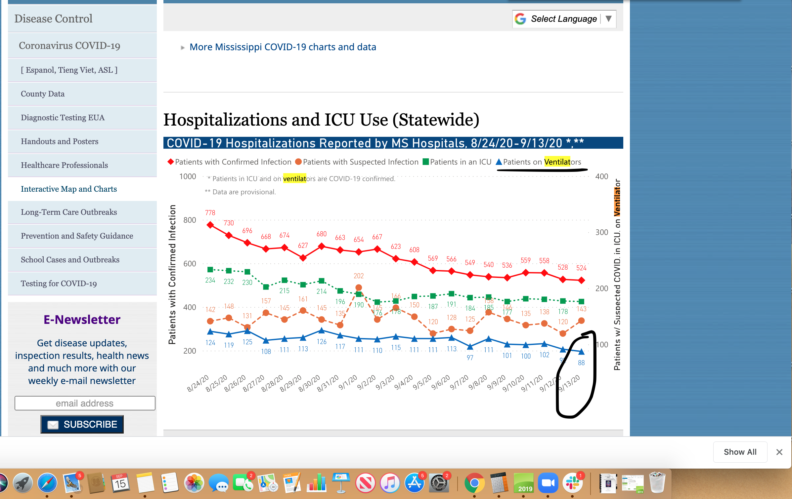

[MS] Backfill Cur. Hosp, Cur. icu from 8/24-9/10. Delete cur. vent from 8/30 - 9/10
Issue number 825
hmhoffman opened this issue on September 11, 2020 at 2:17 pm
Labels Historical Data not stale Backfill
State: MS Dates impacted: 8/24 - 9/10 Issue described: On 8/24 MS switched current hospitalization and icu sources and stoped reporting cur. vent. They resumed reporting this on 9/15. We need to backfill current hospitalizations, cur. icu, and cur. vent for 8/24 - 9/14 from the “Hospitalizations and ICU Use (Statewide)” graph Sources: https://covid-tracking.slack.com/archives/CUQ4MMTPD/p1600201831431600 https://covid-tracking.slack.com/archives/CUQ4MMTPD/p1599857074458900, https://msdh.ms.gov/msdhsite/_static/14,21994,420,873.html
This issue has been closed because it was stale for 15 days, and there was no further activity on it for 10 days. You can feel free to re-open it if the issue is important, and label it as “not stale.”

The changes have been applied to the data.
This is a spreadsheet with the numbers from the screenshot above. We added confirmed and probable hospitalized to get the hospitalizedCurrently
These are the changes that were made: Rows edited: 13 MS 2020-09-14 hospitalizedCurrently: 667 (was 513) inIcuCurrently: 178 (was 171) onVentilatorCurrently: 88 (was None) MS 2020-09-13 hospitalizedCurrently: 648 (was 542) inIcuCurrently: 178 (was 179) onVentilatorCurrently: 92 (was None) MS 2020-09-12 hospitalizedCurrently: 696 (was 542) inIcuCurrently: 177 (was 179) onVentilatorCurrently: 102 (was None) MS 2020-09-11 hospitalizedCurrently: 694 (was 545) inIcuCurrently: 177 (was 182) onVentilatorCurrently: 100 (was None) MS 2020-09-10 hospitalizedCurrently: 682 (was 668) MS 2020-09-09 hospitalizedCurrently: 698 (was 683) MS 2020-09-08 hospitalizedCurrently: 674 (was 758) inIcuCurrently: 184 (was 186) onVentilatorCurrently: 97 (was 111) MS 2020-09-07 hospitalizedCurrently: 694 (was 758) inIcuCurrently: 191 (was 186) onVentilatorCurrently: 113 (was 111) MS 2020-09-06 hospitalizedCurrently: 689 (was 758) inIcuCurrently: 187 (was 186) MS 2020-09-05 inIcuCurrently: 178 (was 186) MS 2020-08-31 hospitalizedCurrently: 825 (was 802) inIcuCurrently: 214 (was 207) onVentilatorCurrently: 126 (was 121) MS 2020-08-30 hospitalizedCurrently: 788 (was 819) onVentilatorCurrently: 113 (was 111) MS 2020-08-28 inIcuCurrently: 230 (was 203)
This issue has been automatically marked as stale because it has not had recent activity. It will be closed if no further activity occurs. Thank you for your contributions!